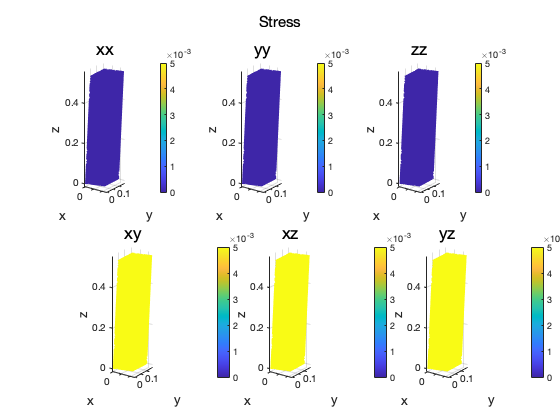

Contents
close all;
clear ;
clc;
mesh grid
load('comsol 5w fix.mat')
Lx = 1; Ly = 1; Lz = 5; Nx = 16; Ny = 16; Nz = 44; mesher = MyRegular_Mesher; mesher.create(5, [Lx, Ly, Lz], [Nx, Ny, Nz], [0 0 0]); x = mesher.x; nx = mesher.nx; ix = mesher.ix; nix = mesher.nix; nnde = 4; % figure; % plot_mesh(3, x, ix, nnde * ones(nix, 1), 'none', 'k', 1); % axis equal % xlabel('x'); % ylabel('y'); % zlabel('z'); % view(19, 23); nx = size(x, 1); nix = size(ix, 1);
material and model properties
nnde = 4; D = 3; nintx = 2; % int. order for K, M nints = 3; % int. order for recovery matarices (Mr, Reps, Rsig) E = 6000000; nu = 0.33; % density rho = 10; % Geometric parameters % length in x,y,z Lz = max(x(:,3)) - min(x(:,3)); Ly = max(x(:,2)) - min(x(:,2)); Lx = max(x(:,1)) - min(x(:,1)); % physical force % gravity g = 9.8;
shape function structures
SFx = GenerateShapeFunction(D,nnde,nintx);
SFs1 = GenerateShapeFunction(D,nnde,nints);
SFs2 = GenerateShapeFunction(D,nnde,1);
% elastic tensor
CC = ElastTensor(E, nu);
Dc = size(CC, 1);
integrate K, M
tic; [K, M] = IntKM(x, ix, SFx, CC); disp(['integration of K, M finished for :', num2str(toc), 'sec']);
integration of K, M finished for :12.8571sec
integrate Mr, Reps, Rsig
tic; [Mr, Reps, Rsig] = intRecoverMat(x, ix, SFs1, SFs2, CC); disp(['integration of Mr, Reps, Rsig finished for :', num2str(toc), 'sec']);
integration of Mr, Reps, Rsig finished for :15.1832sec
Boundary conditions
topID = find( abs(x(:, 3) - Lz) < 1e-5);
lowerID = find( abs(x(:, 3) - 0 ) < 1e-5);
rightID = find( abs(x(:, 2) - Ly) < 1e-5);
leftID = find( abs(x(:, 2) - 0 ) < 1e-5);
frontid = find( abs(x(:, 1) - Lx) < 1e-5);
reverid = find( abs(x(:, 1) - 0 ) < 1e-5);
o = min(x, [], 1);
F = [
0.1075 0.0075 0.0006;
0.0085 0.1049 0.0072;
0.0069 0.0076 0.1054];
bcids = unique([lowerID; topID; leftID; rightID; frontid; reverid]);
xbc = x(bcids, :);
ubc = (xbc - o) * F' + o - xbc;
% constrain
pu2 = [bcids * D - 2, bcids * D - 1, bcids * D]';
pu2 = pu2(:);
u = zeros(nx * D, 1);
u(pu2) = reshape(ubc', length(pu2), 1);
% external forces
fext = zeros(nx * D, 1);
solve for displacement
[u, fext] = solveLin(K, u, fext, pu2);
recover stress and strain
sigVec = Mr \ (Rsig * u); sig = reshape(sigVec, Dc, nx)'; epsVec = Mr \ (Reps * u); eps = reshape(epsVec, Dc, nx)';
deformed configuration;
u0 = reshape(u, D, nx)'; x1 = x + u0; % figure; % % h1=patch('vertices', x, 'faces', ix, ... % % 'facecolor', 'none', 'edgecolor', 'r'); % % set(h1, 'linewidth', 0.5); % % hold on % axis equal % mypatch(x1, ix, 'interp', 'none', u0(:,3), 0.8, 1, 't','x','y','z'); % colorbar; % axis equal % title('u_z'); cel={'xx','yy','zz','xy','xz','yz'}; figure; for i=1:6 subplot(2,3,i) mypatch(x1, ix, 'interp', 'none', eps(:, i), 1,1,cel{i},'x','y','z',0,0.005); end suptitle('Strain'); figure; for i=1:6 subplot(2,3,i) mypatch(x1, ix, 'interp', 'none', sig(:, i), 1,1,cel{i},'x','y','z',0,0.005); end suptitle('Stress'); disp('done');
done